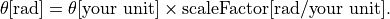

Cosmology computations¶
Code author: Wilfried Mercier - IRAP <wilfried.mercier@irap.omp.eu>
A set of functions to easily compute standard calculations in extragalactic physics using cosmology.
Note
This relies heavily on a custom, Python 3 adapted version of cosmolopy.
-
galaxy.cosmology.COSMOLOGY= {'h': 0.72, 'omega_M_0': 0.3, 'omega_k_0': 0.0, 'omega_lambda_0': 0.7}¶ Default cosmology
-
galaxy.cosmology.angular_diameter_size(z, theta, scaleFactor=1.0, cosmology=None)[source]¶ Code author: Wilfried Mercier - IRAP <wilfried.mercier@irap.omp.eu>
Compute the size of an object with extent theta at redshift z from the angular diameter distance as size=theta*angular diameter distance.
- Parameters
z (int or float) – redshift of the object
theta (int or float) – angle subtended by the object. Unit should be in radians. If not, provide a scaling factor with scaleFactor.
cosmology (dict) –
(Optional) parameters for the desired cosmology. See cosmolopy for more information.
scaleFactor (int or float) –
(Optional) if theta is not in radian, please provide a correct scale factor following the formula

- Returns
physical size in kpc
- Return type
int or float
-
galaxy.cosmology.comoving_los(z1, z2, cosmology=None)[source]¶ Code author: Wilfried Mercier - IRAP <wilfried.mercier@irap.omp.eu>
Compute the line of sight comoving distance between objects.
- Parameters
z1 (int or float) – redshift of the 1st object
z2 (int or float) – redshift of the 2nd object
cosmology (dict) –
(Optional) parameters for the desired cosmology. See cosmolopy for more information.
- Returns
comoving distance in Mpc
- Return type
int or float
-
galaxy.cosmology.comoving_separation(z, theta, cosmology=None)[source]¶ Code author: Wilfried Mercier - IRAP <wilfried.mercier@irap.omp.eu>
Compute the tranverse distance (at fixed redshift) between objects separated by an angle theta on the sky in comoving units.
- Parameters
z (int or float) – redshift of the object
theta (int or float) – angle subtended by the object. Unit should be in radians. If not, provide a scaling factor with scaleFactor.
cosmology (dict) –
(Optional) parameters for the desired cosmology. See cosmolopy for more information.
- Returns
comoving separation in Mpc
- Return type
int or float
-
galaxy.cosmology.separation(z, ra1, dec1, ra2, dec2, units=['deg', 'deg', 'deg', 'deg'])[source]¶ Code author: Wilfried Mercier - IRAP <wilfried.mercier@irap.omp.eu>
Compute the comoving separation between two objects at the same redshift given their position.
- Parameters
z (int or float) – redshift of the two objects
ra1 (float) – right ascension of the first object
dec1 (float) – declination of the first object
ra2 (float) – right ascension of the second object
dec2 (float) – declination of the second object
units (list[float] or list[astropy unit] or str) – units of the different coordinates in this order: ra1, dec1, ra2, dec2
- Returns
comoving separation in Mpc
- Return type
float
- Raises
ValueError – if units is neither an iterable of length 4 or a str